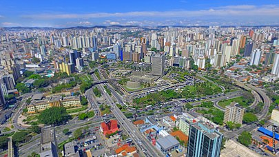

Santo André
Sobre a cidade
Santo André é uma importante cidade localizada na região metropolitana de São Paulo, no ABC Paulista.
Conhecida por sua forte indústria e desenvolvimento econômico, a cidade tem uma rica história e cultura.
Pontos Turísticos
- Parque Central
- Sabina: Escola Parque do conhecimento
- Museu de Santo André Dr. Octaviano Armando Gaiarsa
Curiosidades
- Santo André foi fundada em 8 de abril de 1553.
- A cidade faz parte do chamado "ABC Paulista", junto com São Bernardo do Campo e São Caetano do Sul.
- É sede de importantes universidades, como a UFABC (Universidade Federal do ABC).
Imagem da cidade

Economia
A economia de Santo André é diversificada, com destaque para:
- Industria automobilistica
- Industria quimica
- Setor de serviços
Transporte
A cidade é bem conectada, contando com:
- Estações de trem da CPTM
- Terminal rodoviário
- Ampla rede de onibus municipais e intermunicipais
Para mais informações, visite o site da prefeitura de Santo André